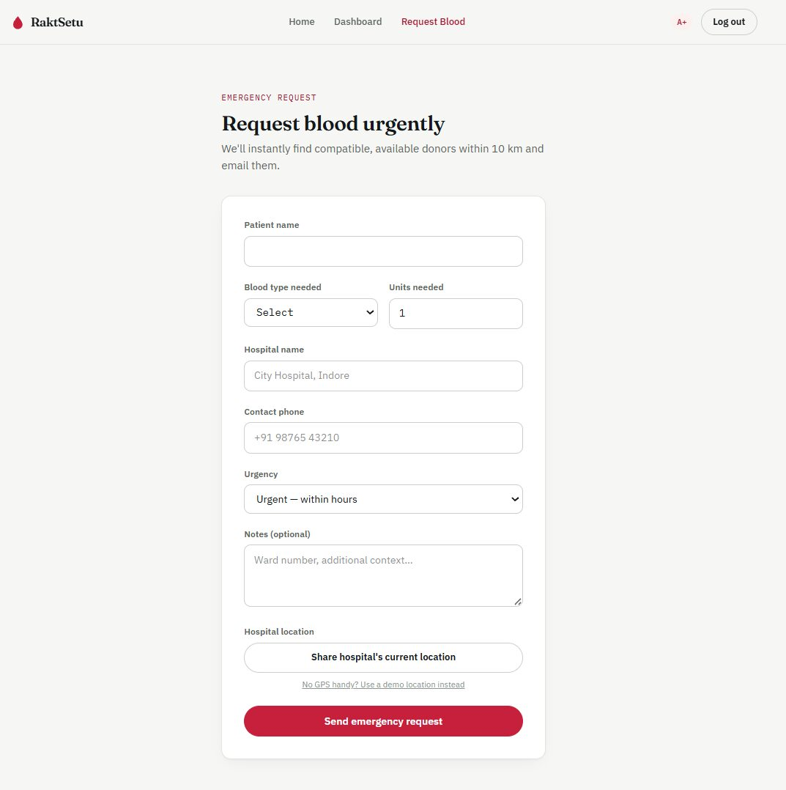
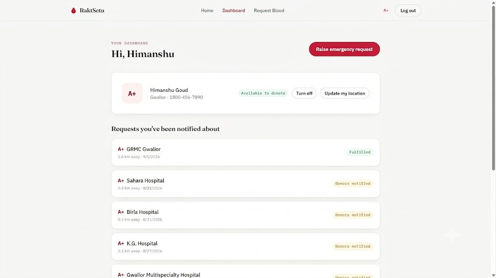

01 — Emergency response
RaktSetu
An emergency blood donor network that finds compatible, nearby donors the moment a request comes in — and gets the requester calling them within seconds, not waiting on email.
- 10km → 100km auto-widening donor search radius
- 90-day donation eligibility window modeled into matching
- 17 automated tests covering compatibility + geo logic
React · Node.js · Express · MongoDB · JWT